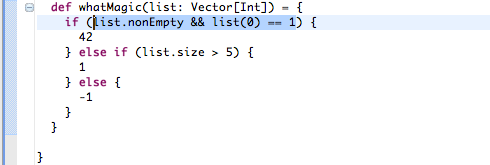
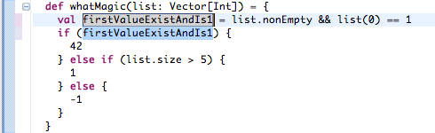
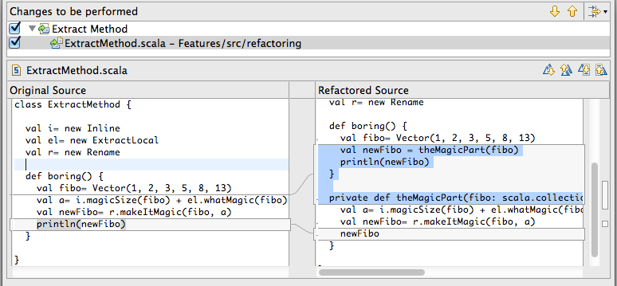
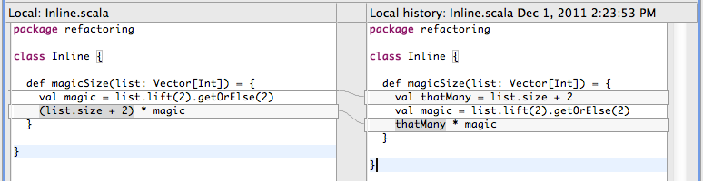

Scala Refactoring is integrated in Scala IDE. It offers a broad range of refactoring actions.
The Extract Local action does the opposite work of Inline Local. It creates a value of an expression. It is a must use to make code more readable.
Select an expression to extract.
Call the action, then set a name for the created value.
The Extract Method action extract the set of selected statements into a new method. The original code is replaced by the equivalent method call.
The Inline Local action helps removing unneeded values.
The action is performed on the currently selected value.
The Organize Imports action allows to do some automated cleanup on the list of imports. It removes the unused or unneeded imports and organizes the remainder.

This action can be configure in the Scala → Organize Import preference page.